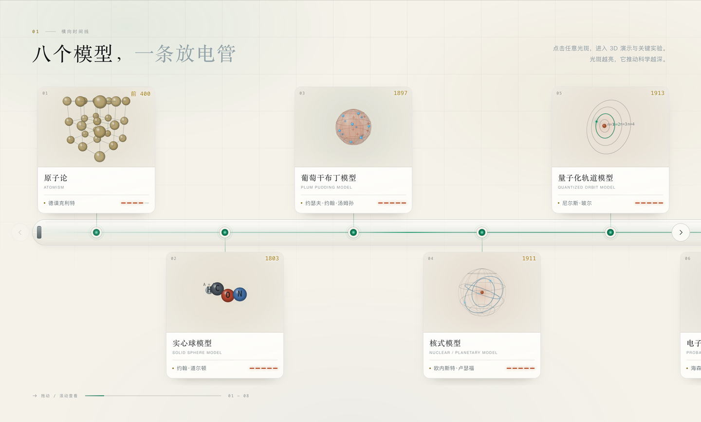
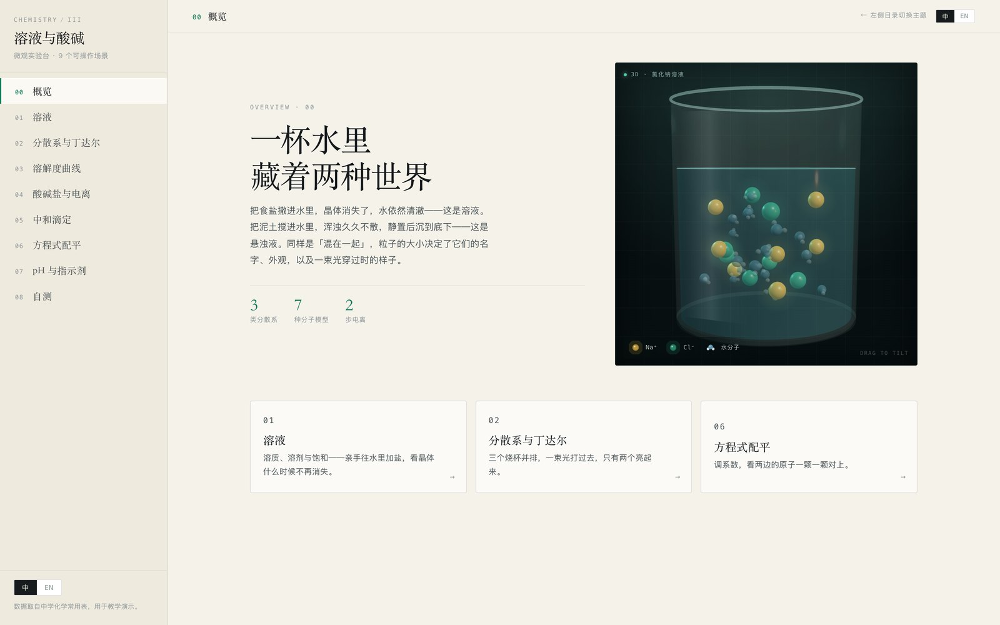
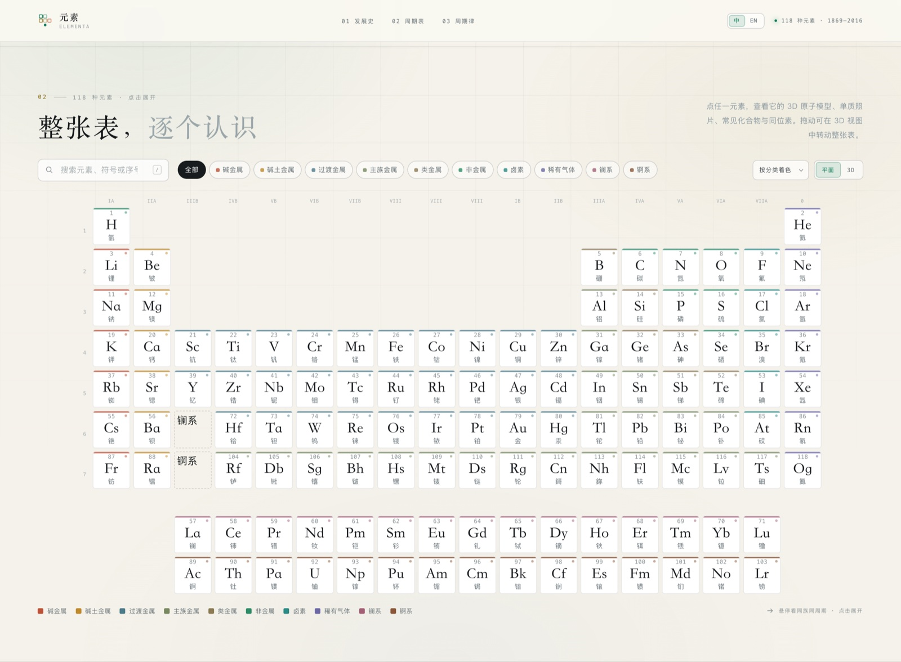

FIELD / Chemistry
化学
Chemistry从原子结构与元素周期表，继续观察溶液、酸碱和物质变化。
AVAILABLE LESSONS / 03
选择一个演示，开始探索
点击卡片即可直接打开演示。

LESSON / 01原子模型2400年
2,400 Years of Atomic Models沿着时间线观察八种原子模型与关键实验，理解科学证据如何改写原子理论。
八种模型 · 六次范式转移 · 中英切换直接进入演示
LESSON / 02溶液与酸碱微观实验台
Solutions, Acids & Bases Lab切换九个微观实验场景，探索溶解、丁达尔效应、溶解度曲线、电离、中和、pH 与方程式配平。
9 个可操作场景 · 中英文切换直接进入演示
LESSON / 03元素周期表
Interactive Periodic Table搜索、筛选并点选元素，查看原子结构、物理性质、同位素、常见化合物与单质照片。
118 种元素 · 2D / 3D · 中英文切换直接进入演示